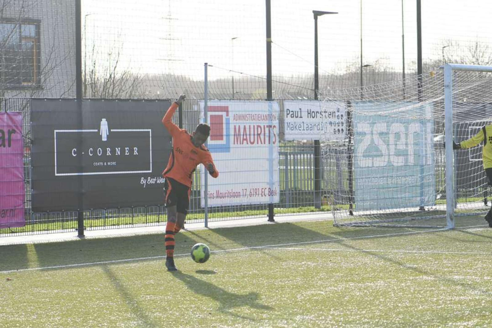

Ik Hou Van Hobby's
Sport is wel echt de peak hobby voor buiten

De eerste peak sport is Airsoft, Want op elkaar schieten is zeer leuk om te doen
Het is alsof je real life CSGO of Warzone aan het doen bent


Tweede peak sport is Voetbal
Voetbal is een echte teamsport waar samenwerking cruciaal is


Kickboksen is de derde peak sport
Kickboksen is vooral een pijnlijke sport waarbij veel uithoudingsvermogen bij aan bod komt


 Home
Home Categorieën
Categorieën Contact
Contact About page
About page